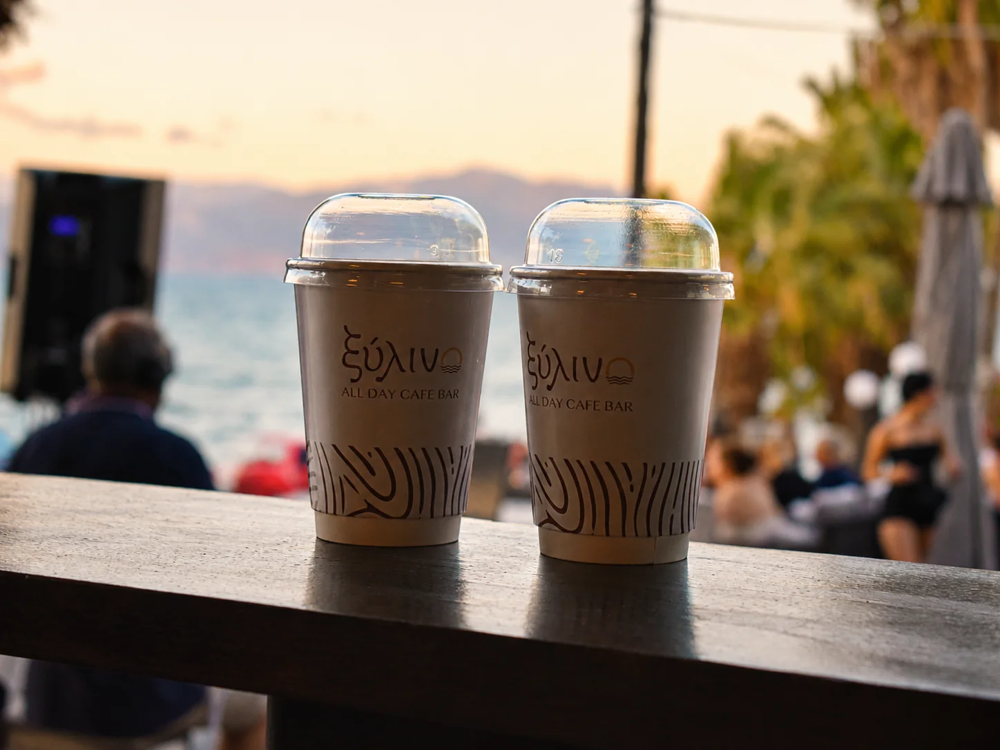
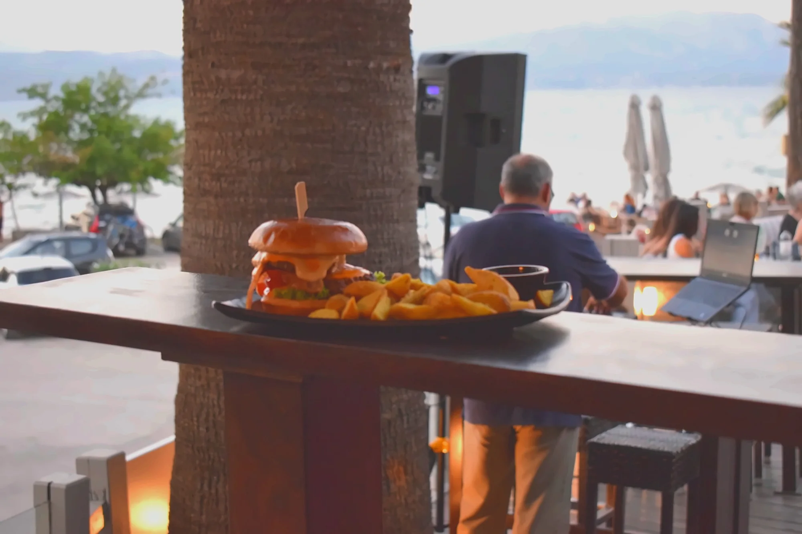
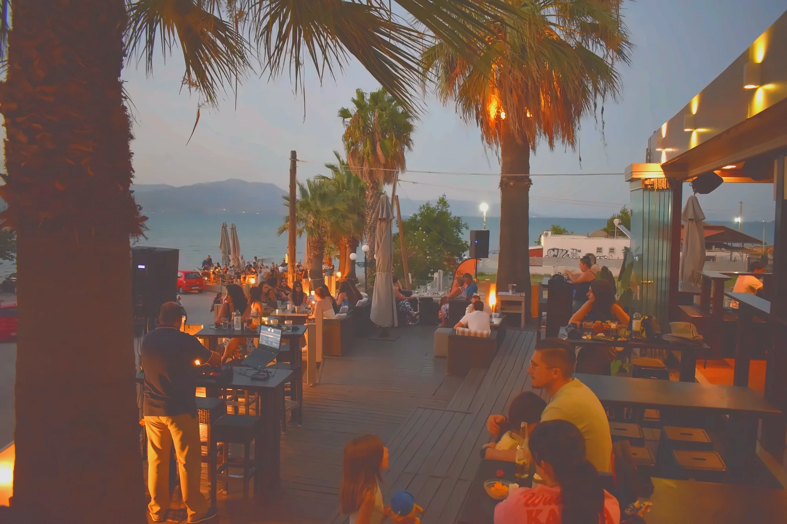
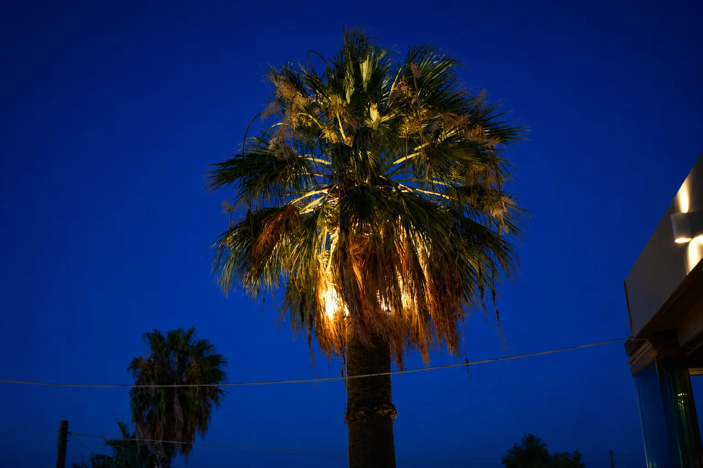

Coffee first.
Freddo, espresso και αργό πρωινό.
ΠΑΡΑΛΙΑ ΠΛΑΚΑ · ΔΗΛΕΣΙ
Καφές από το πρωί, comfort food για την παρέα και cocktails όταν πέφτει ο ήλιος.

ALL DAY
FOOD / ALL DAY
Brunch, burgers, pizza, pasta και γλυκό. Γεύσεις γνώριμες, γενναιόδωρες και φτιαγμένες για να μοιράζονται.
Άνοιξε το menu →FROM MORNING TO NIGHT
Freddo, espresso και αργό πρωινό.
Brunch και comfort food για την παρέα.
Ηλιοβασίλεμα, cocktails και βραδινός ρυθμός.
THE PLACE
Εξωτερικά τραπέζια, θάλασσα μπροστά και η ατμόσφαιρα που αλλάζει μαζί με το φως.
Δες την ατμόσφαιρα ↗

WHY PEOPLE COME BACK
«Καφέ πάνω στο κύμα. Όμορφος χώρος στην παραλία του Δηλεσίου.»
Δημόσια κριτική«Παραθαλάσσιο καφέ, καθαρός και μεγάλος χώρος με θέα στη θάλασσα.»
Δημόσια κριτική«Εξωτερικός χώρος, παιδότοπος, οργανωμένες ξαπλώστρες και πάρκινγκ.»
Δημόσια κριτική